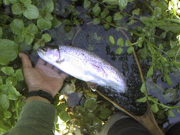
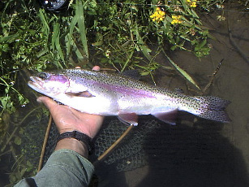
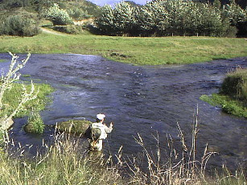
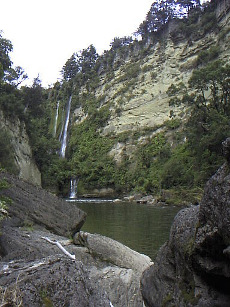
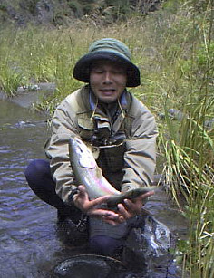
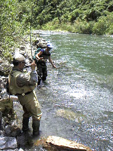
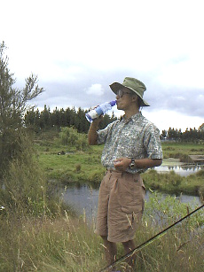
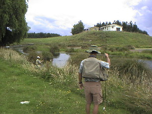

釣行日誌 ＮＺ編
１月 友あり、遠方より来る
2002/01/02 (WED)
釣り場には７時半に着いた。合流点のちょっと下から川に降りる。朝の冷え込みは、真夏の１月でも厳しく、おまけに川の水も冷たいので、キウィスタイルで釣っていると、膝から下がジンジンと痛いほどである。
いつも居るポイントのやや下から、今日も大きなニジマスが飛び出して深みに消えた。釣りにくいポイントなので、どうしても歩き方がぞんざいになってしまう。反省。
木橋の下の大きな淵に、住処に似合った大物が泳いでいるのが見える。まず、60cmはあるだろう。水深は約１．５メートル。重たいニンフでも、あの早い流速ではちょっとキビシイか？ 流れに立ち込むのがためらわれたので、今度来たときのお楽しみにとっておく。
合流点の浅瀬、右の沢筋に、ちょっとした弛みがある。大きなハンピーを投げると、もっこり出た茶色の鼻が見えた。でも合わせ損なう。
次の瀬でも、30cmぐらいの元気いっぱいの鱒が出るが、ドラグがかかって流れ始めたフライをくわえ損なう。鈍くさいヤツめ。ちゅうか、オレがへたくそで、くわせ損なっただけなのであるが。
基本に忠実に行こう。
次の小さな深みで、待ってましたとばかりにドライに出た30cmぐらいの鱒を掛ける。よしよしと遊ばせて寄せてくると、その鱒の後を、40cmぐらいの鱒がクルクルとついてきた。
『お前が先に喰えよ！』
と愚痴ってみても始まらない。大きな方は、取り込んでいるうちにどこかへと消えた。チェッ。
さらに上流の淵で、流れ出しをしつこく流していたブラウン・パラシュートに良型が出る。ぐいぐいと引いて、一つ下の深みまで引きずられた。体は小さいが、エネルギッシュな虹鱒。

それから上流は、最近誰かが入ったらしく、川岸の草が踏み倒されていた。魚の反応もない。数百メートルで通らずの藪になったので早々に諦めて下流へ移動。
国道の橋からすぐ上の区間に入る。おそらく２年ぶりである。ちびっ子鱒が、元気にニンフをつつく。白いマーカーに喰いつくヤツもいる。数だけで言えば、この川は北島、いや、ニュージーランド有数の川である。残念ながら、生息する鱒の平均的なサイズが、30cmに満たないほど小さい。（泣）
しかし、時折釣れる40cm級の姿見たさに今日はしつこく攻めてみるのだ。
カーブで洗掘された崖の淵で、大きな影が淵の弛みを動き回っている。上下左右１メートルほどの範囲を徘徊し、しばしば水面の物体をくわえ込んでいる。食い気満々、あれを釣らなきゃ釣る魚はいない。
と、その下の弛みでも、良いサイズの鼻がライズしたのが見える。まず、あれを静かに釣り上げてから、本命に行こうか。女の子をよりどり選べるプレイボーイの心境である。縁が無い話ではあるが。（笑）
逆手のキャストでティペットに弛みを残しつつ水面に落とした。ドラグがかかる寸前で、鼻先がフライをくわえた。よし、来た！ フッキングした鱒が、上手の弛みに逃げ込む。大物の影が右往左往して動揺している。
『やばいっ！』
前座の俳優を強引に舞台から引きずり降ろし、フライを大きめのブルーハンピーに替え、結び目をチェックしてから、いざ、本命に挑む。
ところが、やっこさん、ぐるぐる動き回っていて、なかなかフライを振り込むタイミングがつかめない。へたにキャストして、喰わせられなかった場合、鱒が下流に移動してしまって、もう最初に位置に戻ってこないことがよくある。そうなると面倒なので、慎重に狙う。
数回の失敗の後、ようやく巧い位置にフライが落ち、流心と弛みの中間のあたりを流れ出す。大きく黒いハンピーの魅力的なシルエットに耐えきれず、影がフライに震いついてくる。
魚体の浮上と潜行、合わせ、最初の突進、次の逸走、下流への強引な引き、下の淵における乱闘を経て、ネットの中に40cmの虹鱒が横たわる。
何を食べているのか、妊婦のように大きな腹をしている。
『大きくなれよ.........』

乱暴狼藉の限りを尽くされ、噴飯物のセリフをかけられた鱒が、よろよろと深みに消えてゆく。
因果な趣味ではあるが、ヤメられません。これだけは。
それ以後、ブラウンビートルで小さいのをたくさん釣った後、ロバートさんの牧場に行く。この区間でも、良型を多数見かけた。再来週に日本から来る川本君を釣れてくるのにちょうど良い区間であろう。
夜明けが５時半、日暮れが９時という長い一日を、朝から夕方まで釣る。夏の釣りを堪能した一日であった。
2002/01/05 (SAT)
朝から快晴。夕方、Ｋさん宅でバーベキューがあるので、ぜひ１尾食べさせてあげたいと思い、スプリングクリークへ。
Ｎ君と二人で懸命に攻めるが、ぴくりとも来ない。変わりやすい通り雨に悩まされながら、釣りにくいポイントで、ようやく１尾、なんとかスピニングで釣る。苦労した鱒は、普段よりずっと美味しかった。
2002/01/13 (SUN)
オークランドの空港に、釣友の川本君を迎えにゆく。今日から１週間のホリデーを旧友と楽しむのだ。無論、観光は無し。釣りばかり。（笑）
ワイカトのスプリングクリークで、軽く腕試し。ニンフを、多数のちびっ子虹鱒がつついた。
2002/01/14 (MON)
スプリングクリークを探り歩く。天候が今イチで、川本君も苦戦。今年は天気が安定しないなァ。

2002/01/15 (TUE)
スプリングクリークの本流・支流では、今日一日頑張ってもこんなもんであろうと見切りを付け、ロトルアに向かう。
さすが、ロトルア、川本君は、50cmオーバーを３尾上げる。その他にも、無念のバラし多数。何故か、季節はずれの産卵床を掘っているレインボーのペアがいた。
地元のティーンエィジャーが、粗末な格好でタバコをふかしながら、驚くべき大きさの鱒を１尾上げていた。
地元の人間には、かなわんわィ。
2002/01/16 (WED)
ランギティキィまでの移動の途中、ちょろっと目に付いた川で竿を出すが、強風に完敗。ま、明日があるさ。
2002/01/17 (THU)
ランギティキィの本流・支流を、名ガイドのスティーブと攻める。わずかに増水気味の流れから、驚くべき大きさの鱒が、驚くべき数で飛び出してきて、驚くべき重力と加速度で僕らのロッドを虐めた。


むむ、恐るべしランギティキィ。

２打数３安打。悪くない成績。
スティーブ、また来るからね。（笑）
2002/01/18 (FRI)
夕べはツランギの斉藤さん宅に泊めていただき、奥様の心づくしの手料理をいただく。多謝。
今日は、斉藤さんのホームグラウンドで釣らせていただく。
うーむ。
斉藤さんのやっている釣りは、僕らの釣りとは別次元である。とうてい追いつけそうにないなと思いつつ、無謀な闘志を燃やす。

鏡のような水面のスプリングクリークは、本当に難しい。

３打数２安打。大物をキャストミスで逃したのが悔しい。
2002/01/19 (SAT)
ハミルトンへ戻ってきてから、再度ワイカトのスプリングクリークへ。以前から目を付けてあった２つのポイントで、川本君が、流れに潜むレインボーに挑んだ。
夕方、最後の最後に、ドンブリ鉢くらいの大きさのスポットから、小さいけれど価値ある１尾を引きずり出す。嬉しい夏の夕暮れ。
2002/01/20 (SUN)
天候不順の中、スプリングクリークなどを釣って回る。牧場で出会う雷は本当に怖い。
東海岸へ行く途中の山上湖も攻めたが、ここも雷で避難。結局スプリングクリークに舞い戻るが、パッとせず。
川本君の長い釣行がやっと終わった。（笑）
釣行日誌ＮＺ編 目次へ
サイトマップ
ホームへ
お問い合わせ